Wed, 07 Mar 2012 10:00:00 GMT
VEVO se estrena en Xbox Live, aunque por ahora no en España
VEVO se estrena en Xbox Live, aunque por ahora no en España
Anunciada hace meses y retrasada de forma indefinida por razones desconocidas, la aplicación oficial de VEVO ya está disponible en el panel de Xbox Live. El servicio de distribución de videoclips musicales llega a la consola de Microsoft con un cargamento de 11.000 artistas y 45.000 vídeos listos para su reproducción. Lamentablemente, entre los países elegidos para el estreno de esta aplicación no está España, así que tocará observarla desde la distancia. No es extraño en cualquier caso que esta clase de canales multimedia en las consolas queden restringidos a muy pocos territorios, así que lo sorprendente habría sido lo contrario. Por supuesto, se estrena respetando el estilo Metro que es obligatorio en todos los productos actuales de Microsoft, y con distintas opciones de búsqueda, navegación, contenidos destacados y acceso a la cuenta personal de usuario. ¿Posibilidades de que llegue algún día aquí? Pues muy pocas, para qué engañarnos, pero quizás me equivoque. Vía | The Verge En Genbeta | Vevo ingresó 150 millones de dólares en 2011 y ya genera beneficios
Anunciada hace meses y retrasada de forma indefinida por razones desconocidas, la aplicación oficial de VEVO ya está disponible en el panel de Xbox Live. El servicio de distribución de videoclips musicales llega a la consola de Microsoft con un cargamento de 11.000 artistas y 45.000 vídeos listos para su reproducción.
Lamentablemente, entre los países elegidos para el estreno de esta aplicación no está España, así que tocará observarla desde la distancia. No es extraño en cualquier caso que esta clase de canales multimedia en las consolas queden restringidos a muy pocos territorios, así que lo sorprendente habría sido lo contrario.
Por supuesto, se estrena respetando el estilo Metro que es obligatorio en todos los productos actuales de Microsoft, y con distintas opciones de búsqueda, navegación, contenidos destacados y acceso a la cuenta personal de usuario. ¿Posibilidades de que llegue algún día aquí? Pues muy pocas, para qué engañarnos, pero quizás me equivoque.
Vía | The Verge
En Genbeta | Vevo ingresó 150 millones de dólares en 2011 y ya genera beneficios

Wed, 07 Mar 2012 08:00:48 GMT
Friendsheet, la aplicación que permite mostrar Facebook como si fuera Pinterest
Friendsheet, la aplicación que permite mostrar Facebook como si fuera Pinterest
Pinterest está hasta en la sopa, eso no lo puede negar nadie, y como consecuencia vemos que proliferan las imitaciones de esta red social cada vez más popular. No obstante, el caso que hoy es comento es bastante más particular, pues se trata de un cruce directo con la mayor competencia. Friendsheet es una aplicación para Facebook que permite convertir el feed de noticias de Facebook en un panel que imita el formato de columnas de Pinterest. Así pues, estamos ante una mezcla de dos mundos que, contrariamente a lo que pueda parecer sobre el papel, ofrece unos resultados bastante buenos. Tanto es así que incluso el mismísimo Mark Zuckerberg le ha otorgado un “me gusta” en su perfil personal. ¿Quién dijo conflicto de intereses? Poco secreto más tiene esta aplicación, así que si os interesa darle una oportunidad, solo tendréis que pasar por la página oficial de Friendsheet e instalarla para comprobar los resultados.
Pinterest está hasta en la sopa, eso no lo puede negar nadie, y como consecuencia vemos que proliferan las imitaciones de esta red social cada vez más popular. No obstante, el caso que hoy es comento es bastante más particular, pues se trata de un cruce directo con la mayor competencia.
Friendsheet es una aplicación para Facebook que permite convertir el feed de noticias de Facebook en un panel que imita el formato de columnas de Pinterest. Así pues, estamos ante una mezcla de dos mundos que, contrariamente a lo que pueda parecer sobre el papel, ofrece unos resultados bastante buenos.
Tanto es así que incluso el mismísimo Mark Zuckerberg le ha otorgado un “me gusta” en su perfil personal. ¿Quién dijo conflicto de intereses? Poco secreto más tiene esta aplicación, así que si os interesa darle una oportunidad, solo tendréis que pasar por la página oficial de Friendsheet e instalarla para comprobar los resultados.
Wed, 07 Mar 2012 06:00:00 GMT
Highlight, una aplicación social para descubrir gente que puede pegar fuerte
Highlight, una aplicación social para descubrir gente que puede pegar fuerte
El abuso del calificativo the next big thing hace que ya cueste creer todo lo que aparece etiquetado de dicha forma, pero no por ello dejamos de estar obligados a prestar atención a las propuestas que vienen haciendo ruido. Así llega Highlight, una nueva aplicación móvil destinada a descubrir gente a nuestro alrededor. Tampoco es que el objetivo de este servicio social sea novedoso, pero tira de atractivo y simpatía para conseguir destacar en su competida categoría. La herramienta funciona constantemente en segundo plano en el móvil, recabando información sobre personas que estén cerca de nosotros y estén conectadas también a la red de Highlight. Cuando la aplicación detecta a alguien en los alrededores, nos permite ver su nombre, fotos que tenga publicadas, intereses, amigos en común y cualquier otro dato que haya decidido hacer público. Así pues, su objetivo es que podamos indagar rápidamente en el perfil de cualquier persona que hayamos conocido o que nos resulte interesante, así como recibir notificaciones cuando tengamos un amigo cerca. Su lanzamiento oficial se produjo a finales de enero y hace pocos días pasó a estar disponible a nivel internacional en la App Store de forma gratuita. Sus responsables planean ya una nueva versión para el SXSW, donde pretenden dar la campanada como ya lo hicieron otras populares soluciones sociales en el pasado. Por ahora le veo un par de pegas a su propuesta: el consumo de batería que conlleva es bastante elevado mientras funciona de fondo, algo para lo que han prometido mejora, y exige conectar por Facebook para acceder al servicio. Por supuesto, también le falta una base de usuarios suficiente como para que su uso tenga un mínimo sentido, aspecto que todavía está por demostrar. El tiempo dirá si pasa del terreno de la promesa.
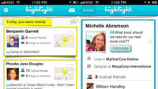
El abuso del calificativo the next big thing hace que ya cueste creer todo lo que aparece etiquetado de dicha forma, pero no por ello dejamos de estar obligados a prestar atención a las propuestas que vienen haciendo ruido. Así llega Highlight, una nueva aplicación móvil destinada a descubrir gente a nuestro alrededor.
Tampoco es que el objetivo de este servicio social sea novedoso, pero tira de atractivo y simpatía para conseguir destacar en su competida categoría. La herramienta funciona constantemente en segundo plano en el móvil, recabando información sobre personas que estén cerca de nosotros y estén conectadas también a la red de Highlight.
Cuando la aplicación detecta a alguien en los alrededores, nos permite ver su nombre, fotos que tenga publicadas, intereses, amigos en común y cualquier otro dato que haya decidido hacer público. Así pues, su objetivo es que podamos indagar rápidamente en el perfil de cualquier persona que hayamos conocido o que nos resulte interesante, así como recibir notificaciones cuando tengamos un amigo cerca.
Su lanzamiento oficial se produjo a finales de enero y hace pocos días pasó a estar disponible a nivel internacional en la App Store de forma gratuita. Sus responsables planean ya una nueva versión para el SXSW, donde pretenden dar la campanada como ya lo hicieron otras populares soluciones sociales en el pasado.
Por ahora le veo un par de pegas a su propuesta: el consumo de batería que conlleva es bastante elevado mientras funciona de fondo, algo para lo que han prometido mejora, y exige conectar por Facebook para acceder al servicio. Por supuesto, también le falta una base de usuarios suficiente como para que su uso tenga un mínimo sentido, aspecto que todavía está por demostrar. El tiempo dirá si pasa del terreno de la promesa.
Tue, 06 Mar 2012 23:18:17 GMT
Zynga abre la beta de su portal de juegos fuera de Facebook
Zynga abre la beta de su portal de juegos fuera de Facebook
La compañía desarrolladora Zynga, nacida bajo el paraguas de Facebook y convertida en uno de los grandes referentes de la nueva era de los juegos sociales, nos sorprendió a todos anunciando hace unos días su decisión de independizarse y presentar su propia plataforma de distribución a través de Zynga.com. La propuesta se encuentra ya en fase beta abierta, por lo que cualquiera puede disfrutar de los cinco juegos disponibles actualmente: Hidden Chronicles, CastleVille, Words with Friends, CityVille y Zynga Poker. Naturalmente, la esencia social que caracteriza a estos títulos no se perderá en esta nueva plataforma, desde la que podremos crear un perfil personal, hacer amigos y mantener el contacto con ellos mientras jugamos. Tampoco se perderán los progresos y estadísticas conseguidos previamente en Facebook. Tras haberse convertido en una de las mayores fuentes de ingresos de Facebook, la ya no tan pequeña compañía de San Francisco se emancipa buscando que la popularidad que ya tienen sus franquicias sea suficiente para poder multiplicar la rentabilidad al hacer que todo el negocio pase por su propio entorno. A pesar de ello, durante los próximos años seguirán llegando nuevos títulos de Zynga a la red social de Mark Zuckerberg. Vía | VG247
La compañía desarrolladora Zynga, nacida bajo el paraguas de Facebook y convertida en uno de los grandes referentes de la nueva era de los juegos sociales, nos sorprendió a todos anunciando hace unos días su decisión de independizarse y presentar su propia plataforma de distribución a través de Zynga.com.
La propuesta se encuentra ya en fase beta abierta, por lo que cualquiera puede disfrutar de los cinco juegos disponibles actualmente: Hidden Chronicles, CastleVille, Words with Friends, CityVille y Zynga Poker. Naturalmente, la esencia social que caracteriza a estos títulos no se perderá en esta nueva plataforma, desde la que podremos crear un perfil personal, hacer amigos y mantener el contacto con ellos mientras jugamos. Tampoco se perderán los progresos y estadísticas conseguidos previamente en Facebook.
Tras haberse convertido en una de las mayores fuentes de ingresos de Facebook, la ya no tan pequeña compañía de San Francisco se emancipa buscando que la popularidad que ya tienen sus franquicias sea suficiente para poder multiplicar la rentabilidad al hacer que todo el negocio pase por su propio entorno. A pesar de ello, durante los próximos años seguirán llegando nuevos títulos de Zynga a la red social de Mark Zuckerberg.
Vía | VG247
Tue, 06 Mar 2012 21:15:00 GMT
Publica textos en Pinterest con formato de imagen usando Pin A Quote
Publica textos en Pinterest con formato de imagen usando Pin A Quote
La publicación de un texto corto (generalmente una cita célebre) en formato de imagen no es nuevo: mucha gente se dedica a hacerlo para compartirlo de una manera más atractiva. Si nos gustaría hacer lo mismo pero no tenemos maña o ganas de usar algún editor gráfico para ello y, además, somos usuarios de Pinterest, podemos recurrir a una herramienta llamada Pin A Quote. Pin A Quote es un servicio gratuito muy sencillo de usar que nos permite seleccionar un texto de un sitio web y, convirtiéndolo previamente en imagen, publicarlo en Pinterest. Funciona por medio de un bookmarklet que, al pulsarlo, nos mostrará una ventana donde podremos editar el texto y añadir quien lo ha dicho. Al pulsar el botón post, se nos abrirá la ventana de Pinterest con el texto convertido en imagen listo para compartirlo en el tablero que deseemos. Aunque el aspecto de las citas es francamente mejorable, es una idea bastante atractiva que nos puede servir para compartir y conservar extractos de textos que encontremos por la web o incluso para añadir un enlace a un post de nuestro blog sin recurrir a la imagen que lo acompaña, sino seleccionando una parte del texto que consideremos interesante. Por cierto, en el sitio sólo vienen instrucciones para añadir el bookmarklet en Firefox, como si solo funcionase en ese navegador. Según he podido comprobar, funciona también en Chrome. Vía | ReadWriteWeb Enlace | Pin A Quote
La publicación de un texto corto (generalmente una cita célebre) en formato de imagen no es nuevo: mucha gente se dedica a hacerlo para compartirlo de una manera más atractiva. Si nos gustaría hacer lo mismo pero no tenemos maña o ganas de usar algún editor gráfico para ello y, además, somos usuarios de Pinterest, podemos recurrir a una herramienta llamada Pin A Quote.
Pin A Quote es un servicio gratuito muy sencillo de usar que nos permite seleccionar un texto de un sitio web y, convirtiéndolo previamente en imagen, publicarlo en Pinterest. Funciona por medio de un bookmarklet que, al pulsarlo, nos mostrará una ventana donde podremos editar el texto y añadir quien lo ha dicho. Al pulsar el botón post, se nos abrirá la ventana de Pinterest con el texto convertido en imagen listo para compartirlo en el tablero que deseemos.
Aunque el aspecto de las citas es francamente mejorable, es una idea bastante atractiva que nos puede servir para compartir y conservar extractos de textos que encontremos por la web o incluso para añadir un enlace a un post de nuestro blog sin recurrir a la imagen que lo acompaña, sino seleccionando una parte del texto que consideremos interesante.
Por cierto, en el sitio sólo vienen instrucciones para añadir el bookmarklet en Firefox, como si solo funcionase en ese navegador. Según he podido comprobar, funciona también en Chrome.
Vía | ReadWriteWeb
Enlace | Pin A Quote
Tue, 06 Mar 2012 18:54:30 GMT
El nuevo director ejecutivo de Yahoo! prepara una dura reestructuración
El nuevo director ejecutivo de Yahoo! prepara una dura reestructuración
Lleva poco más de dos meses al frente de Yahoo!, pero Scott Thompson no parece dispuesto a dormirse en los laureles a la hora de relanzar una compañía que ha visto tiempos muchos mejores. Por ello, distintas fuentes han revelado ya que el nuevo director ejecutivo de la compañía prepara una dura reestructuración de la compañía que supondrá una gran cantidad de despidos. De hecho, se habla de miles de puestos de trabajo sesgados en una empresa que a finales del año pasado contaba con 14.100 empleados. Thompson ha trabajado junto a un grupo de consultoría para evaluar la situación al completo, determinar aquellos aspectos donde deben centrarse para ser competitivos y recortar allí donde se producen las pérdidas. Las divisiones afectadas serán bastantes. Se espera que los primeros cambios en las filas de Yahoo! se anuncien para finales de este mes, buscando al mismo tiempo nuevos modelos de negocio y fuentes de ingresos. Desde luego es una situación complicada, pero intentar mantener una gigantesca estructura que no se adapte a la realidad de la empresa a día de hoy es un suicido a medio plazo; ya veremos si el cambio de rumbo es a mejor. Vía | AllThingsD Imagen | Wikipedia
Lleva poco más de dos meses al frente de Yahoo!, pero Scott Thompson no parece dispuesto a dormirse en los laureles a la hora de relanzar una compañía que ha visto tiempos muchos mejores. Por ello, distintas fuentes han revelado ya que el nuevo director ejecutivo de la compañía prepara una dura reestructuración de la compañía que supondrá una gran cantidad de despidos.
De hecho, se habla de miles de puestos de trabajo sesgados en una empresa que a finales del año pasado contaba con 14.100 empleados. Thompson ha trabajado junto a un grupo de consultoría para evaluar la situación al completo, determinar aquellos aspectos donde deben centrarse para ser competitivos y recortar allí donde se producen las pérdidas. Las divisiones afectadas serán bastantes.
Se espera que los primeros cambios en las filas de Yahoo! se anuncien para finales de este mes, buscando al mismo tiempo nuevos modelos de negocio y fuentes de ingresos. Desde luego es una situación complicada, pero intentar mantener una gigantesca estructura que no se adapte a la realidad de la empresa a día de hoy es un suicido a medio plazo; ya veremos si el cambio de rumbo es a mejor.
Vía | AllThingsD
Imagen | Wikipedia
Tue, 06 Mar 2012 17:07:13 GMT
TwooglePlus, publica tus actualizaciones de Twitter en Google +
TwooglePlus, publica tus actualizaciones de Twitter en Google +
No se si os pasará también a vosotros, pero personalmente no soy igual de activo en todas las redes sociales, lo que hace que alguna de ellas caiga un poco con el olvido. Esto me ocurre fundamentalmente con Google +. Una alternativa que he encontrado para no dejarla tan abandonada es TwooglePlus. Publica tus actualizaciones de Twitter en Google + de forma automática. TwooglePlus es un servicio que está de momento en fase beta y en la que podemos indentificarnos con nuestra cuenta de Twitter, para en la siguiente fase introducir nuestras credenciales de acceso de Google +. El siguiente paso es seleccionar a qué círculos queremos difundir dichos mensajes. Se publican también los retweets que hagamos de otros. En cualquier momento podemos parar esta funcionalidad, restringirla a determinados círculos o añadir más de una cuenta de Twitter si tenemos varias. Igualmente es muy fácil darse de baja del servicio. Más allá de la utilidad que tenga para cada, lo veo más como una opción para no tener en el olvido nuestra cuenta de Google + que para mantenerla adecuadamente. Google + permite otra forma de compartir contenidos distinta a Twitter, no limitado a los 140 caracteres y que puede dar más para una lectura más detenida. Es decir, en Google + no quiero compartir el titular y el enlace, sino más bien compartir un extracto de la noticia que me interesa, más parecido a los RSS que a Twitter. De todas formas tal y como van las cosas últimamente para Google + parece que es la red que está siendo puesta al final de la lista para revisar su actividad por muchos usuarios, y el tiempo que pasan dentro de la misma, una vez pasados los efectos iniciales del lanzamiento cada vez es menor. Esperemos que por lo menos con esta herramienta no quede tan olvidada. Más Información | TwooglePlus En Genbeta | Google no va tan bien como parece: sus usuarios sólo lo usan 3 minutos de media al mes
No se si os pasará también a vosotros, pero personalmente no soy igual de activo en todas las redes sociales, lo que hace que alguna de ellas caiga un poco con el olvido. Esto me ocurre fundamentalmente con Google +. Una alternativa que he encontrado para no dejarla tan abandonada es TwooglePlus. Publica tus actualizaciones de Twitter en Google + de forma automática.
TwooglePlus es un servicio que está de momento en fase beta y en la que podemos indentificarnos con nuestra cuenta de Twitter, para en la siguiente fase introducir nuestras credenciales de acceso de Google +. El siguiente paso es seleccionar a qué círculos queremos difundir dichos mensajes. Se publican también los retweets que hagamos de otros.
En cualquier momento podemos parar esta funcionalidad, restringirla a determinados círculos o añadir más de una cuenta de Twitter si tenemos varias. Igualmente es muy fácil darse de baja del servicio. Más allá de la utilidad que tenga para cada, lo veo más como una opción para no tener en el olvido nuestra cuenta de Google + que para mantenerla adecuadamente.
Google + permite otra forma de compartir contenidos distinta a Twitter, no limitado a los 140 caracteres y que puede dar más para una lectura más detenida. Es decir, en Google + no quiero compartir el titular y el enlace, sino más bien compartir un extracto de la noticia que me interesa, más parecido a los RSS que a Twitter.
De todas formas tal y como van las cosas últimamente para Google + parece que es la red que está siendo puesta al final de la lista para revisar su actividad por muchos usuarios, y el tiempo que pasan dentro de la misma, una vez pasados los efectos iniciales del lanzamiento cada vez es menor. Esperemos que por lo menos con esta herramienta no quede tan olvidada.
Más Información | TwooglePlus
En Genbeta | Google no va tan bien como parece: sus usuarios sólo lo usan 3 minutos de media al mes
Tue, 06 Mar 2012 13:23:19 GMT
Adobe lanza actualización de seguridad urgente para Flash Player en todas las plataformas
Adobe lanza actualización de seguridad urgente para Flash Player en todas las plataformas
Está claro que cuanto más usado es un software más importante es que sea seguro, por el bien tanto de los usuarios como de la empresa, que puede perder a los usuarios. Adobe es uno de los ejemplos más claros, y la cantidad de actualizaciones que se hacen a sus productos (sobre todo a los gratuitos) lo atestiguan. La última de estas actualizaciones ha sido lanzada hace pocas horas para corregir una grave vulnerabilidad que afecta a Flash Player en absolutamente todas las plataformas (Windows, OS X, Linux, Solaris y Android en las ramas 2.x, 3.x y 4.x). Todos los parches para Flash Player 11 y 10 están ya disponibles para descargar. La vulnerabilidad está relacionada con Matrix3D y puede provocar corrupción de memoria y, eventualmente, un acceso no autorizado a la máquina de los usuarios. Las versiones afectadas son Flash Player 11.1.102.62 o inferior en Windows, OS X, Linux y Solaris, Flash Player 11.1.115.6 o inferior en Android ICS y Flash Player 11.1.111.6 o inferior en Android 2.x y 3.x. Vía | Ars Technica Más información | Adobe
Está claro que cuanto más usado es un software más importante es que sea seguro, por el bien tanto de los usuarios como de la empresa, que puede perder a los usuarios. Adobe es uno de los ejemplos más claros, y la cantidad de actualizaciones que se hacen a sus productos (sobre todo a los gratuitos) lo atestiguan.
La última de estas actualizaciones ha sido lanzada hace pocas horas para corregir una grave vulnerabilidad que afecta a Flash Player en absolutamente todas las plataformas (Windows, OS X, Linux, Solaris y Android en las ramas 2.x, 3.x y 4.x). Todos los parches para Flash Player 11 y 10 están ya disponibles para descargar.
La vulnerabilidad está relacionada con Matrix3D y puede provocar corrupción de memoria y, eventualmente, un acceso no autorizado a la máquina de los usuarios. Las versiones afectadas son Flash Player 11.1.102.62 o inferior en Windows, OS X, Linux y Solaris, Flash Player 11.1.115.6 o inferior en Android ICS y Flash Player 11.1.111.6 o inferior en Android 2.x y 3.x.
Vía | Ars Technica
Más información | Adobe
Tue, 06 Mar 2012 10:50:06 GMT
Microsoft lanza Device Center beta en Windows 8 para centralizar la gestión de sus periféricos
Microsoft lanza Device Center beta en Windows 8 para centralizar la gestión de sus periféricos
Microsoft ha presentado una nueva herramienta para administrar periféricos tales como el ratón o el teclado, llamada Device Center. Compatible con Windows 8 (que ha conseguido más de un millón de descargas en un día), el panel pretende unificar todas las opciones de configuración del ratón o teclado en un sólo sitio, a modo de simplificar todas las funcionalidades. De hecho, con Device Center se unen dos tecnologías de Microsoft cuyos nombres quizás os suenen: Intellipoint e IntelliType. Se podrán configurar las acciones del ratón y el teclado para un uso general del sistema y, por separado, configurar las acciones de estos accesorios para que se comporten de un modo determinado con cada aplicación que estemos usando. Para ratones como el Arc Touch Mouse significará una buena ventaja. Por el momento Device Center está en fase beta para la versión Consumer Preview de Windows 8 y sólo en inglés. No es difícil predecir que formará parte de Windows en cuanto su octava versión salga a la venta dentro de unos meses. Y con la llegada de la interfaz metro, cualquier solución que le simplifique las cosas a Windows y sus infinitas versiones es más que bienvenida. Vía | The Verge > Next at Microsoft Más información y descarga | Microsoft Hardware
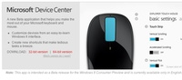
Microsoft ha presentado una nueva herramienta para administrar periféricos tales como el ratón o el teclado, llamada Device Center. Compatible con Windows 8 (que ha conseguido más de un millón de descargas en un día), el panel pretende unificar todas las opciones de configuración del ratón o teclado en un sólo sitio, a modo de simplificar todas las funcionalidades.
De hecho, con Device Center se unen dos tecnologías de Microsoft cuyos nombres quizás os suenen: Intellipoint e IntelliType. Se podrán configurar las acciones del ratón y el teclado para un uso general del sistema y, por separado, configurar las acciones de estos accesorios para que se comporten de un modo determinado con cada aplicación que estemos usando. Para ratones como el Arc Touch Mouse significará una buena ventaja.
Por el momento Device Center está en fase beta para la versión Consumer Preview de Windows 8 y sólo en inglés. No es difícil predecir que formará parte de Windows en cuanto su octava versión salga a la venta dentro de unos meses. Y con la llegada de la interfaz metro, cualquier solución que le simplifique las cosas a Windows y sus infinitas versiones es más que bienvenida.
Vía | The Verge > Next at Microsoft
Más información y descarga | Microsoft Hardware
Tue, 06 Mar 2012 09:16:00 GMT
Oneshar.es, comparte información confidencial de forma segura por la red
Oneshar.es, comparte información confidencial de forma segura por la red
Seguro que os habéis encontrado en una situación semejante en muchas ocasiones: necesitáis enviar información sensible a algún amigo, algo como el teléfono móvil o incluso el número de cuenta corriente. Por muy privado que sea un correo electrónico, un mensaje instantáneo o un mensaje directo por Twitter siempre se queda el miedo a que alguien lea ese dato, ya que se queda en la red de redes aunque lo eliminemos por la política de algunos servicios. Oneshar.es tiene la intención de evitar ese problema ofreciendo un modo seguro de enviar datos sensibles por internet. El sistema es muy simple y efectivo: vamos a suponer que quiero enviar el número de mi DNI a alguien para terminar un trámite. Abro la web de Oneshar.es y creo un nuevo mensaje, donde escribo el número. Genero el enlace y listo, ya tenemos un acceso a mi número de DNI a través de una simple URL. La interfaz simple y agradable del servicio hace que el proceso de enviar datos y crear la dirección sea cómodo y dure apenas unos segundos. Por supuesto, la cosa no se queda aquí. Los datos que abre esa dirección están protegidos bajo una capa de encriptación, y en cuanto alguien (quien sea) abra ese mensaje éste se eliminará del servicio. Es decir, sólo se puede abrir una vez. Si alguien intenta abrirlo de nuevo sólo verá un mensaje indicando que los datos se han autodestruido por motivos de seguridad. Incluso si somos nosotros mismos los que queremos leer el dato. Una buena medida, que descarta cualquier agujero de seguridad. Sitio oficial | Oneshar.es En Genbeta | Día internacional de la privacidad, un repaso a los principales retos pendientes
Seguro que os habéis encontrado en una situación semejante en muchas ocasiones: necesitáis enviar información sensible a algún amigo, algo como el teléfono móvil o incluso el número de cuenta corriente. Por muy privado que sea un correo electrónico, un mensaje instantáneo o un mensaje directo por Twitter siempre se queda el miedo a que alguien lea ese dato, ya que se queda en la red de redes aunque lo eliminemos por la política de algunos servicios. Oneshar.es tiene la intención de evitar ese problema ofreciendo un modo seguro de enviar datos sensibles por internet.
El sistema es muy simple y efectivo: vamos a suponer que quiero enviar el número de mi DNI a alguien para terminar un trámite. Abro la web de Oneshar.es y creo un nuevo mensaje, donde escribo el número. Genero el enlace y listo, ya tenemos un acceso a mi número de DNI a través de una simple URL. La interfaz simple y agradable del servicio hace que el proceso de enviar datos y crear la dirección sea cómodo y dure apenas unos segundos.
Por supuesto, la cosa no se queda aquí. Los datos que abre esa dirección están protegidos bajo una capa de encriptación, y en cuanto alguien (quien sea) abra ese mensaje éste se eliminará del servicio. Es decir, sólo se puede abrir una vez. Si alguien intenta abrirlo de nuevo sólo verá un mensaje indicando que los datos se han autodestruido por motivos de seguridad. Incluso si somos nosotros mismos los que queremos leer el dato. Una buena medida, que descarta cualquier agujero de seguridad.
Sitio oficial | Oneshar.es
En Genbeta | Día internacional de la privacidad, un repaso a los principales retos pendientes
Tue, 06 Mar 2012 06:10:25 GMT
Windows 8 Consumer Preview, a fondo (parte 2)
Windows 8 Consumer Preview, a fondo (parte 2)
En la primera parte de este especial dedicado a analizar Windows 8, a través de la beta pública ofrecida por Microsoft, denominada Windows 8 Consumer Preview, dimos un repaso a la gran novedad del nuevo sistema operativo de la compañía: la interfaz de usuario estilo Metro. En esta segunda parte vamos a ver en detalle un programa que se emplea con mucha frecuencia: el “Explorador de archivos”, que incorpora la interfaz Ribbon, otra de las novedades anunciadas de Windows 8, que ya se sabía iba a aparecer. El explorador de archivos de Windows 8 Ribbon es una interfaz gráfica de usuario que se caracteriza por agrupar funciones de un programa en bandas accesibles a través de pestañas. Microsoft introdujo Ribbon en sus productos con Office 2007. En Windows 8 hay otros programas que incorporan Ribbon, como Wordpad (que ya lo tenía en Windows 7). Centrándonos en el Explorador de archivos, en la parte superior de la ventana del programa tenemos a la izquierda un grupo de iconos. El primero de ellos nos muestra dónde estamos (Favoritos, Bibliotecas, Grupo en el hogar, Equipo y Red). En la zona central de la parte superior de la ventana se mostrará en texto el lugar representado por el icono. Los demás iconos pertenecen a la barra de acceso rápido, que se puede personalizar mostrando u ocultando varias funciones. Por defecto vamos a encontrar Propiedades y Nueva carpeta. En la imagen siguiente podéis ver activadas todas las funciones posibles y sus iconos. Como se ve en la imagen, hay dos controles más en el menú desplegable. El primero, para cambiar la posición de la barra de acceso rápido bajo la banda (Show below the Ribbon), que si se activa, cambia para poder situar la barra en la parte superior (Show above the Ribbon). El otro es para minimizar —y si está minimizada maximizar— la banda. Esta misma acción está contemplada en la zona derecha de la ventana como veremos. En la parte superior derecha de la ventana del Explorador de archivos tenemos los controles ya conocidos para minimizar, maximizar y cerrar el programa, y dos controles más. El primero consiste en una pequeña flecha para mostrar, si están minimizadas, las bandas (la punta estará orientada hacia abajo). Caso contrario, para ocultar las bandas si están visibles, (la punta de la flecha estará orientada hacia arriba). El segundo control, un círculo con el símbolo de interrogación, dispara el sistema de ayuda de Windows 8 que se presenta con interfaz estilo Metro. Interfaz Ribbon del explorador de archivos Con las bandas desplegadas, tenemos un control File (archivo) y tres pestañas: Home, Share y View (Inicio, Compartir y Ver). El control File está destacado con otro color de fondo, y al pinchar con el ratón sobre él despliega un menú dividido en tres zonas. En la izquierda tenemos las acciones posibles identificadas por iconos y texto asociado. En el centro los sitios frecuentes y en la derecha un control para anclar (y que no desaparezca) un lugar en concreto. Al anclar un elemento, pasa a ocupar la primera posición de la lista. De las acciones posibles que despliega el control File, destaca Open Windows PowerShell. Windows PowerShell es una interfaz de consola con posibilidad de escritura y ejecución de scripts, que se ejecuta con privilegios de administrador. Windows PowerShell apareció con Windows Vista y también está presente en Windows 7 y requiere .NET Framework 2.0 para funcionar. El resto de acciones son ya conocidas y no requieren mayor explicación. En la pestaña Home están los controles habituales para el manejo de archivos (copiar, pegar, seleccionar, etc.), aunque encontramos uno nuevo que conviene destacar: Easy access. Este control despliega unas capacidades que son novedad en Windows 8: Pin to Star (permite anclar un elemento al mosaico de la pantalla de inicio), “Incluir en biblioteca”, “Añadir a favoritos”, “Map as drive“ (que permite representar una carpeta como una unidad de disco), “Siempre visible sin conexión”, “Sincronización” y “Trabajar desconectado”. La pestaña Share (compartir), agrupa funciones como envío por correo o fax, compresión en formato ZIP e impresión, controles para gestionar los elementos compartidos y seguridad avanzada. La pestaña View (ver) sirve para administrar las posibilidades de vista de los elementos contenidos en directorios y carpetas. Hay un grupo de controles para organizar los paneles de navegación, otro para los modos de vista (compacta, detallada, etc.), criterios de ordenación de elementos, mostrar y ocultar (nombres de archivos de imagen, ítems y extensión de los archivos) y opciones avanzadas. Hasta aquí las pestañas más comunes, porque las bandas cambian dependiendo del contexto. Así por ejemplo, si estamos en el “Grupo en el hogar”, el número de pestañas se reduce a dos: Grupo en el hogar y Ver. Si estamos en una de las bibliotecas, aparecerá una cuarta pestaña para gestionar bibliotecas, que tendrá superpuesta y destacado en otro color, un nombre más descriptivo. En el caso de las bibliotecas Música, Imágenes y Vídeos, aparecerá una quinta pestaña con herramientas propias del tipo de archivo contenido, como “reproducción” en el caso de la música y el vídeo. Hay más zonas en la ventana del “Explorador de archivos de Windows 8”, que sólo las menciono por ser de sobra conocidas: barra de navegación, (con los controles para avanzar, retroceder o escalar en el árbol de directorios, barra de direcciones y caja de búsqueda), la zona para mostrar los archivos (la de mayor tamaño de la ventana), y barra de estado. En esta última disponemos de dos controles, situados a la derecha, para alternar de forma rápida entre vista detallada y vista de iconos. Web | Descarga En Genbeta | Windows 8 Consumer Preview, a fondo (parte 1) | Cómo instalar Windows 8 en una máquina virtual, paso a paso | Windows 8: todo lo que necesitas saber En Xataka | Un paseo en vídeo por el nuevo Windows 8
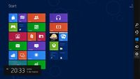
En la primera parte de este especial dedicado a analizar Windows 8, a través de la beta pública ofrecida por Microsoft, denominada Windows 8 Consumer Preview, dimos un repaso a la gran novedad del nuevo sistema operativo de la compañía: la interfaz de usuario estilo Metro.
En esta segunda parte vamos a ver en detalle un programa que se emplea con mucha frecuencia: el “Explorador de archivos”, que incorpora la interfaz Ribbon, otra de las novedades anunciadas de Windows 8, que ya se sabía iba a aparecer.
El explorador de archivos de Windows 8
Ribbon es una interfaz gráfica de usuario que se caracteriza por agrupar funciones de un programa en bandas accesibles a través de pestañas. Microsoft introdujo Ribbon en sus productos con Office 2007. En Windows 8 hay otros programas que incorporan Ribbon, como Wordpad (que ya lo tenía en Windows 7).
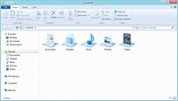
Centrándonos en el Explorador de archivos, en la parte superior de la ventana del programa tenemos a la izquierda un grupo de iconos. El primero de ellos nos muestra dónde estamos (Favoritos, Bibliotecas, Grupo en el hogar, Equipo y Red). En la zona central de la parte superior de la ventana se mostrará en texto el lugar representado por el icono.
Los demás iconos pertenecen a la barra de acceso rápido, que se puede personalizar mostrando u ocultando varias funciones. Por defecto vamos a encontrar Propiedades y Nueva carpeta. En la imagen siguiente podéis ver activadas todas las funciones posibles y sus iconos.
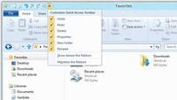
Como se ve en la imagen, hay dos controles más en el menú desplegable. El primero, para cambiar la posición de la barra de acceso rápido bajo la banda (Show below the Ribbon), que si se activa, cambia para poder situar la barra en la parte superior (Show above the Ribbon). El otro es para minimizar —y si está minimizada maximizar— la banda. Esta misma acción está contemplada en la zona derecha de la ventana como veremos.
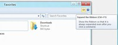
En la parte superior derecha de la ventana del Explorador de archivos tenemos los controles ya conocidos para minimizar, maximizar y cerrar el programa, y dos controles más. El primero consiste en una pequeña flecha para mostrar, si están minimizadas, las bandas (la punta estará orientada hacia abajo).
Caso contrario, para ocultar las bandas si están visibles, (la punta de la flecha estará orientada hacia arriba). El segundo control, un círculo con el símbolo de interrogación, dispara el sistema de ayuda de Windows 8 que se presenta con interfaz estilo Metro.
Interfaz Ribbon del explorador de archivos
Con las bandas desplegadas, tenemos un control File (archivo) y tres pestañas: Home, Share y View (Inicio, Compartir y Ver). El control File está destacado con otro color de fondo, y al pinchar con el ratón sobre él despliega un menú dividido en tres zonas. En la izquierda tenemos las acciones posibles identificadas por iconos y texto asociado. En el centro los sitios frecuentes y en la derecha un control para anclar (y que no desaparezca) un lugar en concreto. Al anclar un elemento, pasa a ocupar la primera posición de la lista.
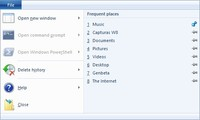
De las acciones posibles que despliega el control File, destaca Open Windows PowerShell. Windows PowerShell es una interfaz de consola con posibilidad de escritura y ejecución de scripts, que se ejecuta con privilegios de administrador. Windows PowerShell apareció con Windows Vista y también está presente en Windows 7 y requiere .NET Framework 2.0 para funcionar. El resto de acciones son ya conocidas y no requieren mayor explicación.
En la pestaña Home están los controles habituales para el manejo de archivos (copiar, pegar, seleccionar, etc.), aunque encontramos uno nuevo que conviene destacar: Easy access. Este control despliega unas capacidades que son novedad en Windows 8: Pin to Star (permite anclar un elemento al mosaico de la pantalla de inicio), “Incluir en biblioteca”, “Añadir a favoritos”, “Map as drive“ (que permite representar una carpeta como una unidad de disco), “Siempre visible sin conexión”, “Sincronización” y “Trabajar desconectado”.
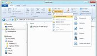
La pestaña Share (compartir), agrupa funciones como envío por correo o fax, compresión en formato ZIP e impresión, controles para gestionar los elementos compartidos y seguridad avanzada.
La pestaña View (ver) sirve para administrar las posibilidades de vista de los elementos contenidos en directorios y carpetas. Hay un grupo de controles para organizar los paneles de navegación, otro para los modos de vista (compacta, detallada, etc.), criterios de ordenación de elementos, mostrar y ocultar (nombres de archivos de imagen, ítems y extensión de los archivos) y opciones avanzadas.
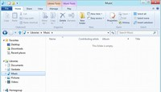
Hasta aquí las pestañas más comunes, porque las bandas cambian dependiendo del contexto. Así por ejemplo, si estamos en el “Grupo en el hogar”, el número de pestañas se reduce a dos: Grupo en el hogar y Ver. Si estamos en una de las bibliotecas, aparecerá una cuarta pestaña para gestionar bibliotecas, que tendrá superpuesta y destacado en otro color, un nombre más descriptivo.
En el caso de las bibliotecas Música, Imágenes y Vídeos, aparecerá una quinta pestaña con herramientas propias del tipo de archivo contenido, como “reproducción” en el caso de la música y el vídeo.
Hay más zonas en la ventana del “Explorador de archivos de Windows 8”, que sólo las menciono por ser de sobra conocidas: barra de navegación, (con los controles para avanzar, retroceder o escalar en el árbol de directorios, barra de direcciones y caja de búsqueda), la zona para mostrar los archivos (la de mayor tamaño de la ventana), y barra de estado. En esta última disponemos de dos controles, situados a la derecha, para alternar de forma rápida entre vista detallada y vista de iconos.
Web | Descarga
En Genbeta | Windows 8 Consumer Preview, a fondo (parte 1) | Cómo instalar Windows 8 en una máquina virtual, paso a paso | Windows 8: todo lo que necesitas saber
En Xataka | Un paseo en vídeo por el nuevo Windows 8
Mon, 05 Mar 2012 16:31:00 GMT
Workflowy da los primeros pasos con sus cuentas de pago
Workflowy da los primeros pasos con sus cuentas de pago
ACTUALIZACIÓN: El vídeo que describe brevemente las opciones Pro de Workflowy vuelve a estar disponible. Podéis verlo después del salto.
A finales del año pasado os hablamos de Workflowy, un gestor de proyectos y tareas online la mar de sencillo para los que quieren tener un nivel decente de organización sin complicarse demasiado la vida con aplicaciones llenas de funcionalidades que no vamos a usar. Hasta ahora el servicio ha sido gratuito, pero los responsables han estrenado las cuentas Workflowy Pro con un puñado de ventajas extra para los que usan Workflowy a diario. Dichas ventajas son poder hacer un número ilimitado de listas y tareas (algo que antes los usuarios gratuitos podían hacer pero que ahora ven cómo tienen un límite de 500 elementos semanales), copia de seguridad automática en Dropbox, edición de tareas sin necesidad de estar conectado a internet, cambio de fuentes y de estilo de la web y prioridad a la hora de recibir correos del soporte técnico. El precio de esta cuenta Pro es de 4,99 dólares mensuales o bien 49 dólares anuales. Son unos 37 euros anuales, un precio razonable si estamos usando el servicio frecuentemente. Las ventajas aún no se anuncian a bombo y platillo, y extraña el hecho de que hayan eliminado en vídeo demostrativo describiendo todas las ventajas. En la cuenta oficial de Twitter de Workflowy están debatiendo algunas mejoras para los usuarios gratuitos, así que a lo mejor en breve introducen algún que otro cambio. Mientras tanto, si queréis suscribiros a Workflowy Pro, podéis hacerlo desde las preferencias de vuestra cuenta. Sitio oficial | Workflowy Vídeo | YouTube
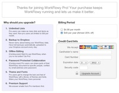
ACTUALIZACIÓN: El vídeo que describe brevemente las opciones Pro de Workflowy vuelve a estar disponible. Podéis verlo después del salto.
A finales del año pasado os hablamos de Workflowy, un gestor de proyectos y tareas online la mar de sencillo para los que quieren tener un nivel decente de organización sin complicarse demasiado la vida con aplicaciones llenas de funcionalidades que no vamos a usar. Hasta ahora el servicio ha sido gratuito, pero los responsables han estrenado las cuentas Workflowy Pro con un puñado de ventajas extra para los que usan Workflowy a diario.
Dichas ventajas son poder hacer un número ilimitado de listas y tareas (algo que antes los usuarios gratuitos podían hacer pero que ahora ven cómo tienen un límite de 500 elementos semanales), copia de seguridad automática en Dropbox, edición de tareas sin necesidad de estar conectado a internet, cambio de fuentes y de estilo de la web y prioridad a la hora de recibir correos del soporte técnico.
El precio de esta cuenta Pro es de 4,99 dólares mensuales o bien 49 dólares anuales. Son unos 37 euros anuales, un precio razonable si estamos usando el servicio frecuentemente. Las ventajas aún no se anuncian a bombo y platillo, y extraña el hecho de que hayan eliminado en vídeo demostrativo describiendo todas las ventajas. En la cuenta oficial de Twitter de Workflowy están debatiendo algunas mejoras para los usuarios gratuitos, así que a lo mejor en breve introducen algún que otro cambio. Mientras tanto, si queréis suscribiros a Workflowy Pro, podéis hacerlo desde las preferencias de vuestra cuenta.
Sitio oficial | Workflowy
Vídeo | YouTube
Mon, 05 Mar 2012 15:32:52 GMT
¿Os gustan las interfaces móviles en equipos de escritorio? La pregunta de la semana
¿Os gustan las interfaces móviles en equipos de escritorio? La pregunta de la semana
En la semana después de MWC una de las tendencias que se han dejado ver es la integración cada vez mayor de móvil y tablets y a su vez su integración con el escritorio. Claro que esto tiene ciertas consecuencias para la interfaz del escritorio que cada vez se suman más a la moda estética que nos proponen desde los sistemas móviles. Por eso queremos saber si: ¿Os gustan las interfaces móviles en equipos de escritorio? Los vemos en Windows 8 con Metro, pero también Ubuntu con Unity parecen querer llevar al escritorio la interfaz que está bien para manejar con los dedos, pero quizás no tanto con el teclado y el ratón. Lo mismo ocurre con Apple que cada vez parece prestar más atención a iOS y algo menos a Mac OSX. Por eso queremos saber vuestra opinión al respecto. La pregunta de la semana pasada Una pregunta que muchos de vosotros habéis contestado sobre Windows 8, muy apropiada ahora que acaba de salir la versión beta pública: ¿Actualizarás a Windows 8 en cuanto esté disponible? La mejor respuesta ha sido la planteada por javier_vg que nos advierte de las versiones beta: Está claro que no… es una norma que en cuanto salga a la luz van a salir fallos que no quisiera experimentar XD, pero no porque sea de una marca en concreto, sino porque eso es así con todo proyecto, por lo tanto yo voy a dejar tiempo a que se depure todo en condiciones, normalmente unos meses, incluso podemos llegar al año en caso de hablar de un SO. Además mientras así damos tiempo para que se llene el market, se nutra un poquito más el ecosistema que quieren montar, etc Ahora os toca a vosotros y esperamos vuestras opiniones en la sección de Respuestas de Genbeta. Como siempre serán vuestros votos los que elijan la mejor respuesta a la pregunta sobre la influencia de las interfaces móviles en los sistemas de escritorio que hemos realizado. En Genbeta Respuestas | ¿Os gustan las interfaces móviles en equipos de escritorio?

En la semana después de MWC una de las tendencias que se han dejado ver es la integración cada vez mayor de móvil y tablets y a su vez su integración con el escritorio. Claro que esto tiene ciertas consecuencias para la interfaz del escritorio que cada vez se suman más a la moda estética que nos proponen desde los sistemas móviles. Por eso queremos saber si:
¿Os gustan las interfaces móviles en equipos de escritorio?
Los vemos en Windows 8 con Metro, pero también Ubuntu con Unity parecen querer llevar al escritorio la interfaz que está bien para manejar con los dedos, pero quizás no tanto con el teclado y el ratón. Lo mismo ocurre con Apple que cada vez parece prestar más atención a iOS y algo menos a Mac OSX. Por eso queremos saber vuestra opinión al respecto.
La pregunta de la semana pasada
Una pregunta que muchos de vosotros habéis contestado sobre Windows 8, muy apropiada ahora que acaba de salir la versión beta pública:
¿Actualizarás a Windows 8 en cuanto esté disponible?
La mejor respuesta ha sido la planteada por javier_vg que nos advierte de las versiones beta:
Está claro que no… es una norma que en cuanto salga a la luz van a salir fallos que no quisiera experimentar XD, pero no porque sea de una marca en concreto, sino porque eso es así con todo proyecto, por lo tanto yo voy a dejar tiempo a que se depure todo en condiciones, normalmente unos meses, incluso podemos llegar al año en caso de hablar de un SO. Además mientras así damos tiempo para que se llene el market, se nutra un poquito más el ecosistema que quieren montar, etc
Ahora os toca a vosotros y esperamos vuestras opiniones en la sección de Respuestas de Genbeta. Como siempre serán vuestros votos los que elijan la mejor respuesta a la pregunta sobre la influencia de las interfaces móviles en los sistemas de escritorio que hemos realizado.
En Genbeta Respuestas | ¿Os gustan las interfaces móviles en equipos de escritorio?
Wed, 07 Mar 2012 09:00:00 GMT
Actualización de Skype para Mac con necesarias novedades
Actualización de Skype para Mac con necesarias novedades
Es llamativa la forma en que los creadores de Skype tratan a las versiones para diferentes sistemas operativos de su cliente, incluyendo novedades en unas que se quedan pendientes en otras y creando una brecha bastante llamativa en su propio producto. Esta vez, el turno de alegrías es para los usuarios de Mac. Ya se puede descargar la versión 5.6 de la herramienta, que se pone al día en cuestiones como acceso a actualizaciones automáticas, interfaz mejorada para llamadas en grupo, capacidad para borrar conversaciones y para desactivar el control de ganancia de audio por si no es de vuestro agrado. También se ha adaptado por fin a Lion incorporando el modo a pantalla completa e incluye algunas mejoras puntuales al mantener conversaciones o gestionar nuestros contactos. Así pues, queda claro que se trata de una renovación obligatoria para todos los usuarios de Skype en este sistema operativo. Vía | Skype Blog En Genbeta | “Estamos creciendo cada vez más”: Hablamos con Rick Osterloh, director de producto y diseño de Skype, Skype ya permite hacer llamadas desde la aplicación a nuestros contactos de Facebook
Es llamativa la forma en que los creadores de Skype tratan a las versiones para diferentes sistemas operativos de su cliente, incluyendo novedades en unas que se quedan pendientes en otras y creando una brecha bastante llamativa en su propio producto. Esta vez, el turno de alegrías es para los usuarios de Mac.
Ya se puede descargar la versión 5.6 de la herramienta, que se pone al día en cuestiones como acceso a actualizaciones automáticas, interfaz mejorada para llamadas en grupo, capacidad para borrar conversaciones y para desactivar el control de ganancia de audio por si no es de vuestro agrado.
También se ha adaptado por fin a Lion incorporando el modo a pantalla completa e incluye algunas mejoras puntuales al mantener conversaciones o gestionar nuestros contactos. Así pues, queda claro que se trata de una renovación obligatoria para todos los usuarios de Skype en este sistema operativo.
Vía | Skype Blog
En Genbeta | “Estamos creciendo cada vez más”: Hablamos con Rick Osterloh, director de producto y diseño de Skype, Skype ya permite hacer llamadas desde la aplicación a nuestros contactos de Facebook
Wed, 07 Mar 2012 07:00:00 GMT
Branch, discusión y curación de contenidos de la mano de los creadores de Twitter
Branch, discusión y curación de contenidos de la mano de los creadores de Twitter
Biz Stone, Evan Williams y Jason Goldman, tres de los fundadores de Twitter que actualmente trabajan en equipo bajo el nombre de Obvious Corporation, han decidido unirse a los creadores de un proyecto hasta ahora conocido como Roundtable para lanzarse al desarrollo de Branch. Apuntad bien el nombre porque puede que lo oigamos mencionar mucho a partir de ahora. Según su carta de presentación, se trata de una plataforma que pretende ser una vía inteligente de fomentar el debate público de alta calidad. Así pues, mediante la tan cacareada curación de contenidos, buscará servir de entorno preparado para que grupos de discusión puedan tratar temas concretos en las mejores condiciones posibles. Su objetivo es fomentar la colaboración y la apertura del debate, pero sin renunciar a unos niveles mínimos de calidad en el mensaje. ¿Demasiado idealista para ser cierto? La propuesta de Branch está ahí y habrá que ver cómo se traduce en el terreno práctico, pero por el momento mi atención ya la han conseguido. Vía | Obvious Corporation
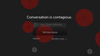
Biz Stone, Evan Williams y Jason Goldman, tres de los fundadores de Twitter que actualmente trabajan en equipo bajo el nombre de Obvious Corporation, han decidido unirse a los creadores de un proyecto hasta ahora conocido como Roundtable para lanzarse al desarrollo de Branch. Apuntad bien el nombre porque puede que lo oigamos mencionar mucho a partir de ahora.
Según su carta de presentación, se trata de una plataforma que pretende ser una vía inteligente de fomentar el debate público de alta calidad. Así pues, mediante la tan cacareada curación de contenidos, buscará servir de entorno preparado para que grupos de discusión puedan tratar temas concretos en las mejores condiciones posibles.
Su objetivo es fomentar la colaboración y la apertura del debate, pero sin renunciar a unos niveles mínimos de calidad en el mensaje. ¿Demasiado idealista para ser cierto? La propuesta de Branch está ahí y habrá que ver cómo se traduce en el terreno práctico, pero por el momento mi atención ya la han conseguido.
Vía | Obvious Corporation
Tue, 06 Mar 2012 23:43:25 GMT
Parallels Desktop ya permite instalar Windows 8 y Mountain Lion
Parallels Desktop ya permite instalar Windows 8 y Mountain Lion
Con la hornada de nuevos sistemas operativos que tenemos en camino, es lógico que los usuarios más curiosos ya estemos poniendo a punto nuestras máquinas virtuales para poder probar las versiones beta que las compañías van sacando. De hecho, ya os explicamos paso a paso cómo instalar Windows 8 en VirtualBox. En el terreno de Mac, Parallels Desktop es una de las opciones más socorridas para este fin, así que el programa ya se ha puesto al día con los nuevos productos de Microsoft y Apple. La herramienta de virtualización ha recibido una actualización que permite instalar máquinas con Windows 8 y Mountain Lion, siempre y cuando tengáis acceso al mismo. Así pues, bastará con usar el propio método de actualización integrado en Parallels Desktop para poder disfrutar de la compatibilidad con estos dos nuevos sistemas operativos. Con ello, os podréis entretener trasteando sin el temor de fastidiar algo importante en vuestros equipos. Vía | Cnet
Con la hornada de nuevos sistemas operativos que tenemos en camino, es lógico que los usuarios más curiosos ya estemos poniendo a punto nuestras máquinas virtuales para poder probar las versiones beta que las compañías van sacando. De hecho, ya os explicamos paso a paso cómo instalar Windows 8 en VirtualBox.
En el terreno de Mac, Parallels Desktop es una de las opciones más socorridas para este fin, así que el programa ya se ha puesto al día con los nuevos productos de Microsoft y Apple. La herramienta de virtualización ha recibido una actualización que permite instalar máquinas con Windows 8 y Mountain Lion, siempre y cuando tengáis acceso al mismo.
Así pues, bastará con usar el propio método de actualización integrado en Parallels Desktop para poder disfrutar de la compatibilidad con estos dos nuevos sistemas operativos. Con ello, os podréis entretener trasteando sin el temor de fastidiar algo importante en vuestros equipos.
Vía | Cnet
Tue, 06 Mar 2012 22:49:51 GMT
YouTube incorporará por fin previsualizaciones en su reproductor
YouTube incorporará por fin previsualizaciones en su reproductor
Se ha hecho de rogar, pero el equipo responsable de YouTube ha decidido anunciar por fin una opción que la comunidad de usuarios llevaba años reclamando. Se trata de la posibilidad de observar previsualizaciones del vídeo durante su reproducción, a modo de fotogramas en miniatura sobre la barra de reproducción. Estas previsualizaciones se podrán aprovechar de tres formas: como un simple fotograma que se muestra al poner el ratón sobre un instante determinado de la barra, como un carrusel de miniaturas con las escenas destacadas o como una segunda barra en vídeos muy extensos para poder realizar búsquedas más precisas de momentos exactos. Todas las opciones me parecen acertadas y necesarias, así que muy probablemente se convertirán en un añadido imprescindible cuando estén disponibles. El plan es que las previsualizaciones vayan llegando al más popular servicio de vídeo en la Red durante las próximas semanas, proceso que muy probablemente se realice de forma escalonada. Vía | YouTube En Genbeta | Impide que YouTube almacene los videos que has visto y tus búsquedas
Se ha hecho de rogar, pero el equipo responsable de YouTube ha decidido anunciar por fin una opción que la comunidad de usuarios llevaba años reclamando. Se trata de la posibilidad de observar previsualizaciones del vídeo durante su reproducción, a modo de fotogramas en miniatura sobre la barra de reproducción.
Estas previsualizaciones se podrán aprovechar de tres formas: como un simple fotograma que se muestra al poner el ratón sobre un instante determinado de la barra, como un carrusel de miniaturas con las escenas destacadas o como una segunda barra en vídeos muy extensos para poder realizar búsquedas más precisas de momentos exactos.
Todas las opciones me parecen acertadas y necesarias, así que muy probablemente se convertirán en un añadido imprescindible cuando estén disponibles. El plan es que las previsualizaciones vayan llegando al más popular servicio de vídeo en la Red durante las próximas semanas, proceso que muy probablemente se realice de forma escalonada.
Vía | YouTube
En Genbeta | Impide que YouTube almacene los videos que has visto y tus búsquedas
Tue, 06 Mar 2012 19:45:26 GMT
Publicadas muchas de las nuevas características que traerá Office 15
Publicadas muchas de las nuevas características que traerá Office 15
Como sabemos, la próxima versión de la suite ofimática más popular, Microsoft Office, está en fase de beta privada. Sólo unos cuantos privilegiados tienen acceso oficial a la misma y a las novedades que trae. Pues bien, por fin han aparecido en Internet las que serán las principales novedades de Office 15. Además de una nueva interfaz que fusiona Ribbon y Metro (dato que ya teníamos bien asumido desde hace meses), no podemos perdernos las nuevas características que la gente de Microsoft está puliendo para que el gran público pueda probarlas en pocos meses. Word 15 La combinación de Ribbon y Metro da como resultado una interfaz muy limpia en todas las aplicaciones de Office El que seguro que es el programa que todos conocemos más a fondo recibe interesantes mejoras como el modo para pantallas táctiles del que hablamos, en el cual los elementos de la Ribbon se reorganizan y readaptan para mejorar el uso con los dedos. El modo de lectura también recibe mejoras, como la capacidad de cerrar la aplicación y que al volver a abrirla el documento se desplace automáticamente hacia el punto por el que íbamos. Este modo de lectura también permite abrir documentos PDF (en principio sólo para visualización) y reajustar el texto al hacer zoom. También podemos ocultar y mostrar párrafos a placer, mostrando únicamente los encabezados. Otra nueva característica es el zoom en elementos del documento, de manera que hacer doble click en una tabla, por ejemplo, hará que únicamente aparezca esa tabla y podamos centrarnos en ella. Es posible también insertar contenidos multimedia desde la Web, como vídeos de YouTube o imágenes de Facebook. Por último, también hay mejoras visibles al realizar y visualizar comentarios, dado que además es posible responderlos; característica que quizá podría ser especialmente útil en entornos donde sea habitual editar documentos en grupo. Excel 15 Además de la nueva interfaz que combina Ribbon y Metro, Excel recibe algunas nuevas características útiles El principal enfoque de esta nueva versión de Excel es facilitar a los neófitos el acceso y la visualización de grandes cantidades de datos, y el resultado son las nuevas maneras de organizar y mostrar esta información, como tablas dinámicas y gráficos realmente fáciles de crear. También se han facilitado las opciones para reformatear y reordenar datos. El modo para pantallas táctiles tampoco se ha dejado atrás en Excel, permitiendo navegar por hojas de cálculo y gráficos con la punta de nuestros dedos (obviamente siempre que contemos con el hardware adecuado). Los gráficos ahora también mostrarán animaciones al realizar ediciones en los datos de origen (y podría ser especialmente útil, por ejemplo, con datos actualizados dinámicamente desde la Web). También se incluirá una gran colección de plantillas para crear facturas, recibos, calendarios… PowerPoint 15 La pestaña “Archivo” también recibe cambios, como vemos en esta captura de PowerPoint 15 Uno de los cambios que más rápido notaremos en PowerPoint 15 es que las presentaciones serán panorámicas por defecto, ajustándose a pantallas y proyectores con la relación de aspecto 16:9. Lo que llaman “experiencia de inicio” de PowerPoint también mejorará, de nuevo, con mejores plantillas y diseños, para dar un aspecto más profesional a nuestras presentaciones. El modo táctil de PowerPoint 15 se reducirá a facilitar la navegación por diapositivas en dispositivos sensibles al tacto, permitiendo pasarlas con un gesto de nuestro dedo o nuestro puntero. Nada especialmente útil en este caso, la verdad. Esta aplicación también gana la misma función de Word, de manera que PowerPoint recordará por qué punto íbamos de una presentación antes de cerrar la aplicación la vez anterior. Seguro que más de un profesor agradecerá esta función. Outlook 15 La tipografía es el elemento predominante en la interfaz de Outlook 15, que de nuevo recibe cambios respecto a su versión El cliente de correo electrónico y gestor de información personal Outlook recibe también mejoras, si bien el cambio no será tan drástico como cuando adoptó la interfaz Ribbon. Sus usuarios dispondrán de una nueva vista unificada donde ver las citas para ese día, los correos pendientes y demás. También se integran servicios de predicción meteorológica, de manera que un usuario podrá saber el tiempo que hará un día determinado antes de aceptar o rechazar una invitación. Por último, se incluyen mejoras en la gestión de múltiples cuentas de múltiples servicios. OneNote 15 OneNote tendrá dos versiones en Office 15: una versión que funciona en el entorno “Metro” de Windows 8 y una versión de escritorio, como la que conocemos OneNote dispondrá de una versión desarrollada en WinRT para funcionar en el modo Metro de Windows 8 (y podemos imaginar, incluso, que con características semejantes a los clientes de iOS, Android y Symbian), si bien también existirá una versión funcionando en el escritorio clásico que, cómo no, recibirá mejoras. Por ejemplo, ahora los usuarios recibirán información actualizada instantáneamente de contenido embebido proveniente de archivos Visio o Excel. También mejora el soporte de tablas, permitiendo reordenar los datos y transformarlas en una hoja de cálculo incrustada en el bloc de notas. Y, al igual que Word y PowerPoint, OneNote también recordará en qué posición de nuestro contenido nos encontramos entre ejecuciones de la aplicación. Conclusiones: puede merecer la pena, pero aún no lo sabemos Office 15 incluye numerosas mejoras respecto a su versión predecesora, Office 2010 (que hay que reconocer que deja el listón muy alto). No podemos negar la evidencia. Lo que sí dudo es si para las empresas merecerá la pena la actualización. Más allá de los modos pensados para usar con pantallas táctiles, realmente, no hay ninguna killer feature que vaya a obligarnos a cambiar de versión. Aunque, como de costumbre, los usuarios son los que mandan. Vía e imágenes | The Verge
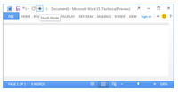
Como sabemos, la próxima versión de la suite ofimática más popular, Microsoft Office, está en fase de beta privada. Sólo unos cuantos privilegiados tienen acceso oficial a la misma y a las novedades que trae.
Pues bien, por fin han aparecido en Internet las que serán las principales novedades de Office 15. Además de una nueva interfaz que fusiona Ribbon y Metro (dato que ya teníamos bien asumido desde hace meses), no podemos perdernos las nuevas características que la gente de Microsoft está puliendo para que el gran público pueda probarlas en pocos meses.
Word 15
La combinación de Ribbon y Metro da como resultado una interfaz muy limpia en todas las aplicaciones de Office
El que seguro que es el programa que todos conocemos más a fondo recibe interesantes mejoras como el modo para pantallas táctiles del que hablamos, en el cual los elementos de la Ribbon se reorganizan y readaptan para mejorar el uso con los dedos.
El modo de lectura también recibe mejoras, como la capacidad de cerrar la aplicación y que al volver a abrirla el documento se desplace automáticamente hacia el punto por el que íbamos. Este modo de lectura también permite abrir documentos PDF (en principio sólo para visualización) y reajustar el texto al hacer zoom. También podemos ocultar y mostrar párrafos a placer, mostrando únicamente los encabezados.
Otra nueva característica es el zoom en elementos del documento, de manera que hacer doble click en una tabla, por ejemplo, hará que únicamente aparezca esa tabla y podamos centrarnos en ella. Es posible también insertar contenidos multimedia desde la Web, como vídeos de YouTube o imágenes de Facebook.
Por último, también hay mejoras visibles al realizar y visualizar comentarios, dado que además es posible responderlos; característica que quizá podría ser especialmente útil en entornos donde sea habitual editar documentos en grupo.
Excel 15
Además de la nueva interfaz que combina Ribbon y Metro, Excel recibe algunas nuevas características útiles
El principal enfoque de esta nueva versión de Excel es facilitar a los neófitos el acceso y la visualización de grandes cantidades de datos, y el resultado son las nuevas maneras de organizar y mostrar esta información, como tablas dinámicas y gráficos realmente fáciles de crear. También se han facilitado las opciones para reformatear y reordenar datos.
El modo para pantallas táctiles tampoco se ha dejado atrás en Excel, permitiendo navegar por hojas de cálculo y gráficos con la punta de nuestros dedos (obviamente siempre que contemos con el hardware adecuado). Los gráficos ahora también mostrarán animaciones al realizar ediciones en los datos de origen (y podría ser especialmente útil, por ejemplo, con datos actualizados dinámicamente desde la Web).
También se incluirá una gran colección de plantillas para crear facturas, recibos, calendarios…
PowerPoint 15
La pestaña “Archivo” también recibe cambios, como vemos en esta captura de PowerPoint 15
Uno de los cambios que más rápido notaremos en PowerPoint 15 es que las presentaciones serán panorámicas por defecto, ajustándose a pantallas y proyectores con la relación de aspecto 16:9. Lo que llaman “experiencia de inicio” de PowerPoint también mejorará, de nuevo, con mejores plantillas y diseños, para dar un aspecto más profesional a nuestras presentaciones.
El modo táctil de PowerPoint 15 se reducirá a facilitar la navegación por diapositivas en dispositivos sensibles al tacto, permitiendo pasarlas con un gesto de nuestro dedo o nuestro puntero. Nada especialmente útil en este caso, la verdad. Esta aplicación también gana la misma función de Word, de manera que PowerPoint recordará por qué punto íbamos de una presentación antes de cerrar la aplicación la vez anterior. Seguro que más de un profesor agradecerá esta función.
Outlook 15
La tipografía es el elemento predominante en la interfaz de Outlook 15, que de nuevo recibe cambios respecto a su versión
El cliente de correo electrónico y gestor de información personal Outlook recibe también mejoras, si bien el cambio no será tan drástico como cuando adoptó la interfaz Ribbon. Sus usuarios dispondrán de una nueva vista unificada donde ver las citas para ese día, los correos pendientes y demás.
También se integran servicios de predicción meteorológica, de manera que un usuario podrá saber el tiempo que hará un día determinado antes de aceptar o rechazar una invitación. Por último, se incluyen mejoras en la gestión de múltiples cuentas de múltiples servicios.
OneNote 15
OneNote tendrá dos versiones en Office 15: una versión que funciona en el entorno “Metro” de Windows 8 y una versión de escritorio, como la que conocemos
OneNote dispondrá de una versión desarrollada en WinRT para funcionar en el modo Metro de Windows 8 (y podemos imaginar, incluso, que con características semejantes a los clientes de iOS, Android y Symbian), si bien también existirá una versión funcionando en el escritorio clásico que, cómo no, recibirá mejoras.
Por ejemplo, ahora los usuarios recibirán información actualizada instantáneamente de contenido embebido proveniente de archivos Visio o Excel. También mejora el soporte de tablas, permitiendo reordenar los datos y transformarlas en una hoja de cálculo incrustada en el bloc de notas.
Y, al igual que Word y PowerPoint, OneNote también recordará en qué posición de nuestro contenido nos encontramos entre ejecuciones de la aplicación.
Conclusiones: puede merecer la pena, pero aún no lo sabemos
Office 15 incluye numerosas mejoras respecto a su versión predecesora, Office 2010 (que hay que reconocer que deja el listón muy alto). No podemos negar la evidencia. Lo que sí dudo es si para las empresas merecerá la pena la actualización.
Más allá de los modos pensados para usar con pantallas táctiles, realmente, no hay ninguna killer feature que vaya a obligarnos a cambiar de versión. Aunque, como de costumbre, los usuarios son los que mandan.
Vía e imágenes | The Verge
Tue, 06 Mar 2012 18:24:20 GMT
Google Play, la nueva tienda digital de Google para reunir sus servicios multimedia
Google Play, la nueva tienda digital de Google para reunir sus servicios multimedia
Google sorprende a veces en sus lanzamientos y lo cierto es que hoy lo hace con Google Play, la nueva tienda digital de Google para reunir sus servicios multimedia y tener todos los contenidos disponibles tanto a través del navegador como en los teléfonos o tablets con Android. Se trata de un servicio que reúne todo el contenido que hasta ahora el usuario tenía disperso en distintos servicios como Android Market, Google Music o Google eBookstore, pero también su oferta de vídeos bajo demanda. El servicio en sí mismo no cambia a los servicios individuales, que seguirán funcionando como tales. Google Play lo que hace es unificar todo el ecosistema de entretenimiento que ya teníamos disponibles y además ayudarnos a que esté disponible sin necesidad de estar sincronizando. De esta manera no importa desde qué dispositivo compres tus contenidos que siempre estarán disponibles desde cualquiera de ellos. Una buena estrategia de negocio, pero también una buena forma de compartirlos. Por ejemplo en el caso de los eBooks nos facilita compartir los contenidos de nuestra lectura a través de correo electrónico, Google + o Bluetooth, haciendo de esta manera la lectura de los libros más social, algo similar al concepto de 24symbols. Más allá de comparaciones con otros productos similares lo cierto es que venía haciendo falta que estos servicios se unificaran. Ahora sólo esperamos que los que no tenemos disponibles en nuestros países den pronto el salto y nos permitan disfrutar de una experiencia multimedia completa y global. Ahora la pregunta sería, ¿lo fiamos todo a Google o nos guardamos una copia en local de nuestra música, ebooks, etc.? Vía | Xataka Más Información | Google Play En Genbeta | Google Drive podría llegar en las próximas semanas

Google sorprende a veces en sus lanzamientos y lo cierto es que hoy lo hace con Google Play, la nueva tienda digital de Google para reunir sus servicios multimedia y tener todos los contenidos disponibles tanto a través del navegador como en los teléfonos o tablets con Android. Se trata de un servicio que reúne todo el contenido que hasta ahora el usuario tenía disperso en distintos servicios como Android Market, Google Music o Google eBookstore, pero también su oferta de vídeos bajo demanda.
El servicio en sí mismo no cambia a los servicios individuales, que seguirán funcionando como tales. Google Play lo que hace es unificar todo el ecosistema de entretenimiento que ya teníamos disponibles y además ayudarnos a que esté disponible sin necesidad de estar sincronizando. De esta manera no importa desde qué dispositivo compres tus contenidos que siempre estarán disponibles desde cualquiera de ellos.
Una buena estrategia de negocio, pero también una buena forma de compartirlos. Por ejemplo en el caso de los eBooks nos facilita compartir los contenidos de nuestra lectura a través de correo electrónico, Google + o Bluetooth, haciendo de esta manera la lectura de los libros más social, algo similar al concepto de 24symbols.
Más allá de comparaciones con otros productos similares lo cierto es que venía haciendo falta que estos servicios se unificaran. Ahora sólo esperamos que los que no tenemos disponibles en nuestros países den pronto el salto y nos permitan disfrutar de una experiencia multimedia completa y global. Ahora la pregunta sería, ¿lo fiamos todo a Google o nos guardamos una copia en local de nuestra música, ebooks, etc.?
Vía | Xataka
Más Información | Google Play
En Genbeta | Google Drive podría llegar en las próximas semanas
Tue, 06 Mar 2012 15:27:30 GMT
Square sube como la espuma en los USA, pero... ¿es realmente la forma de pagar del futuro?
Square sube como la espuma en los USA, pero... ¿es realmente la forma de pagar del futuro?
Siempre oímos hablar de Square como algo lejano, pero en territorio estadounidense esta compañía se está convirtiendo en el estandarte de un cambio en la forma con la que podemos pagar cualquier producto o servicio, tanto para el vendedor como para el cliente (que ve como su cartera ya no engorda con millones de tickets de compra). Ya no hacen falta intermediarios: Square nos deja claro su impuesto del 2,75% de cada pago que opere y a partir de ahí todos nuestros pagos se efectúan con ellos. Perfecto para pequeños negocios, y mucho mejor con la aplicación Register que nos permite tirar a la basura esos armatostes llamados cajas registradoras. Muchos alaban esta nueva forma de pagar y en España muchas personas piden que algo así también se implemente, pero… ¿estamos realmente ante el futuro de los pagos? Square: el usuario gana, pero podría ganar más Square parte de una muy buena base: un modo extremadamente fácil de gestionar los pagos que se efectúen en tu negocio, una tasa completamente transparente y sin engaños, pagos que se reflejan en tu cuenta en sólo un día y la no necesidad de tener que encadenarnos a un banco para poder tener una máquina registradora de tarjetas de crédito. Eso está muy bien, pero ¿qué hay de las ventajas que tiene el cliente? Las hay: nada de tickets, firmas completamente electrónicas y una serie de servicios que hacen que revisar los pagos con nuestra tarjeta se parezcan más a navegar por una red social. Pero hay algo que es clave, y es la comodidad al efectuar el pago. Y con Square, ese punto no mejora en absoluto. El cliente sigue teniendo que tener una tarjeta de crédito y sigue teniendo que firmar. Sí, es mucho más cómodo ahora al ser todo electrónico, pero desde el lado del cliente es lo mismo que antes: Das una tarjeta, te piden que firmes, firmas y te vas con lo que has comprado. El proceso no se reduce ni se aligera en absoluto. Pagar con un gesto La clave está en hacer que el proceso de pago absurdamente fácil. Que sea tan sencillo que haya que tener cuidado de no hacerlo sin querer. Eso es precisamente lo que pretende el sistema NFC (Near Field Communications), algo que algunas entidades están ya empezando a probar incluso en nuestro país. La idea aquí es pagar directamente aprovechando el chip NFC de nuestro móvil: imaginaos ir a comprar el pan y pagar su precio (que rondará los 1-3 euros) acercando el móvil a un dispositivo. Ya no hay que rebuscar ninguna tarjeta en la cartera: el smartphone es algo que siempre tenemos a mano, y los pagos se efectuarían en uno o dos segundos. Pero claro, no todo es un camino de rosas. Esta tecnología tiene sus problemas de seguridad, cosa que ha quedado demostrada con el reciente comunicado que Google ha hecho acerca de su servicio de pagos por NFC Google Wallet. Éste es un servicio a medias entre lo que hablamos y los pagos actuales con tarjeta, ya que crea un ‘paso intermedio’ guardando la información de nuestra tarjeta en Google para efectuar los pagos más rápidamente. Pero aunque sea intermedio, ya consigue que los pagos se efectúen en uno o dos segundos. Y ésa es la clave. Si eliminamos por completo las tarjetas de crédito de la fórmula, entonces el responsable de gestionar esos pagos serían las operadoras o incluso los fabricantes del teléfono. Apple, por ejemplo, podría tener otra fuente de beneficios si con el próximo iPhone instaurara los pagos por NFC a través de las cuentas de iTunes. Millones de personas tienen un iPhone, así que sólo haría falta un dispositivo receptor de pagos en cada negocio, una tasa para que Apple saque tajada del asunto y boom, ya tenemos aquí los pagos del futuro. Y cuando digo Apple y cuentas de iTunes, también puedo decir Google con sus cuentas @gmail.com. Por supuesto eso no significa que esté diciendo que Square se va a estrellar. Square ha demostrado a todo el mundo que algo tan común como los pagos también se puede beneficiar de la revolución del internet móvil, y sólo tienen que actualizarse y ser compatibles con los pagos NFC para no bajarse de la cresta de la ola. Y para eso sólo hacen falta móviles compatibles y un poquito de trabajo por parte de los responsables del desarrollo de software. Todo queda borroso por el momento, pero lo claro es que en cuanto una empresa encienda la mecha de la explosión de este tipo de pagos mucha gente se subirá al carro. Y las tarjetas de crédito seguirán existiendo, pero la parte del la población con móviles de última generación migrarán hacia lo que les resulte más cómodo. Y lo más cómodo que se ve desde el presente es sin duda pagar cualquier cosa acercando el móvil a un aparato receptor. Vídeo | YouTube En Genbeta | Las incógnitas de Google Wallet y el futuro del pago por móvil
Siempre oímos hablar de Square como algo lejano, pero en territorio estadounidense esta compañía se está convirtiendo en el estandarte de un cambio en la forma con la que podemos pagar cualquier producto o servicio, tanto para el vendedor como para el cliente (que ve como su cartera ya no engorda con millones de tickets de compra).
Ya no hacen falta intermediarios: Square nos deja claro su impuesto del 2,75% de cada pago que opere y a partir de ahí todos nuestros pagos se efectúan con ellos. Perfecto para pequeños negocios, y mucho mejor con la aplicación Register que nos permite tirar a la basura esos armatostes llamados cajas registradoras. Muchos alaban esta nueva forma de pagar y en España muchas personas piden que algo así también se implemente, pero… ¿estamos realmente ante el futuro de los pagos?
Square: el usuario gana, pero podría ganar más
Square parte de una muy buena base: un modo extremadamente fácil de gestionar los pagos que se efectúen en tu negocio, una tasa completamente transparente y sin engaños, pagos que se reflejan en tu cuenta en sólo un día y la no necesidad de tener que encadenarnos a un banco para poder tener una máquina registradora de tarjetas de crédito. Eso está muy bien, pero ¿qué hay de las ventajas que tiene el cliente?
Las hay: nada de tickets, firmas completamente electrónicas y una serie de servicios que hacen que revisar los pagos con nuestra tarjeta se parezcan más a navegar por una red social. Pero hay algo que es clave, y es la comodidad al efectuar el pago. Y con Square, ese punto no mejora en absoluto.
El cliente sigue teniendo que tener una tarjeta de crédito y sigue teniendo que firmar. Sí, es mucho más cómodo ahora al ser todo electrónico, pero desde el lado del cliente es lo mismo que antes: Das una tarjeta, te piden que firmes, firmas y te vas con lo que has comprado. El proceso no se reduce ni se aligera en absoluto.
Pagar con un gesto
La clave está en hacer que el proceso de pago absurdamente fácil. Que sea tan sencillo que haya que tener cuidado de no hacerlo sin querer. Eso es precisamente lo que pretende el sistema NFC (Near Field Communications), algo que algunas entidades están ya empezando a probar incluso en nuestro país.
La idea aquí es pagar directamente aprovechando el chip NFC de nuestro móvil: imaginaos ir a comprar el pan y pagar su precio (que rondará los 1-3 euros) acercando el móvil a un dispositivo. Ya no hay que rebuscar ninguna tarjeta en la cartera: el smartphone es algo que siempre tenemos a mano, y los pagos se efectuarían en uno o dos segundos.
Pero claro, no todo es un camino de rosas. Esta tecnología tiene sus problemas de seguridad, cosa que ha quedado demostrada con el reciente comunicado que Google ha hecho acerca de su servicio de pagos por NFC Google Wallet. Éste es un servicio a medias entre lo que hablamos y los pagos actuales con tarjeta, ya que crea un ‘paso intermedio’ guardando la información de nuestra tarjeta en Google para efectuar los pagos más rápidamente. Pero aunque sea intermedio, ya consigue que los pagos se efectúen en uno o dos segundos. Y ésa es la clave.

Si eliminamos por completo las tarjetas de crédito de la fórmula, entonces el responsable de gestionar esos pagos serían las operadoras o incluso los fabricantes del teléfono. Apple, por ejemplo, podría tener otra fuente de beneficios si con el próximo iPhone instaurara los pagos por NFC a través de las cuentas de iTunes. Millones de personas tienen un iPhone, así que sólo haría falta un dispositivo receptor de pagos en cada negocio, una tasa para que Apple saque tajada del asunto y boom, ya tenemos aquí los pagos del futuro. Y cuando digo Apple y cuentas de iTunes, también puedo decir Google con sus cuentas @gmail.com.
Por supuesto eso no significa que esté diciendo que Square se va a estrellar. Square ha demostrado a todo el mundo que algo tan común como los pagos también se puede beneficiar de la revolución del internet móvil, y sólo tienen que actualizarse y ser compatibles con los pagos NFC para no bajarse de la cresta de la ola. Y para eso sólo hacen falta móviles compatibles y un poquito de trabajo por parte de los responsables del desarrollo de software.
Todo queda borroso por el momento, pero lo claro es que en cuanto una empresa encienda la mecha de la explosión de este tipo de pagos mucha gente se subirá al carro. Y las tarjetas de crédito seguirán existiendo, pero la parte del la población con móviles de última generación migrarán hacia lo que les resulte más cómodo. Y lo más cómodo que se ve desde el presente es sin duda pagar cualquier cosa acercando el móvil a un aparato receptor.
Vídeo | YouTube
En Genbeta | Las incógnitas de Google Wallet y el futuro del pago por móvil
Tue, 06 Mar 2012 12:54:44 GMT
Google permitirá alojar aplicaciones de hasta 4GB en el Android Market
Google permitirá alojar aplicaciones de hasta 4GB en el Android Market
Una problemática a la que se enfrentan los desarrolladores de aplicaciones móviles hoy en día es que, para aprovechar mejor las nuevas características de los dispositivos móviles (como la pantalla retina del iPad que se supone que será presentado mañana) deben mejorar sus aplicaciones, haciendo en muchas ocasiones que ocupen más espacio. El caso de los juegos es más frecuente, dado que deben empaquetar además del código los gráficos, sonidos y demás. Google lo sabe y pensando en estos dispositivos con cada vez mejores procesadores y mejores pantallas ha decidido aumentar el límite de tamaño de las aplicaciones en el Android Market hasta la friolera de 4GB. Este nuevo límite permitirá, por ejemplo, mejores texturas en juegos y demás. El límite lo pone el desarrollador en esta ocasión. El archivo APK con la aplicación en sí sólo podrá ocupar 50MB (sería lo que se almacenaría en el almacenamiento interno obligatoriamente), eso sí, pero permitirán subir hasta dos archivos con recursos auxiliares de 2GB cada uno (que serían los que podrían alojarse en una hipotética memoria externa). De esta manera, además, la descarga se realizaría íntegramente desde el Market. Esos archivos de expansión, por cierto, podrán ser compartidos por varias aplicaciones. El tiempo de descarga será mayor, sí, y pensando en el periodo de pruebas es comprensible pensar en qué momento comenzarán los 15 minutos que tenemos para devolver una aplicación. Ese periodo comenzará, en los dispositivos nuevos, en el momento de finalizar la descarga (y en los antiguos, al ejecutar la aplicación por primera vez). Vía | Xataka Android » Android Developers Blog Más información | Android Developers Imagen | Kham Tran
Una problemática a la que se enfrentan los desarrolladores de aplicaciones móviles hoy en día es que, para aprovechar mejor las nuevas características de los dispositivos móviles (como la pantalla retina del iPad que se supone que será presentado mañana) deben mejorar sus aplicaciones, haciendo en muchas ocasiones que ocupen más espacio. El caso de los juegos es más frecuente, dado que deben empaquetar además del código los gráficos, sonidos y demás.
Google lo sabe y pensando en estos dispositivos con cada vez mejores procesadores y mejores pantallas ha decidido aumentar el límite de tamaño de las aplicaciones en el Android Market hasta la friolera de 4GB. Este nuevo límite permitirá, por ejemplo, mejores texturas en juegos y demás. El límite lo pone el desarrollador en esta ocasión.
El archivo APK con la aplicación en sí sólo podrá ocupar 50MB (sería lo que se almacenaría en el almacenamiento interno obligatoriamente), eso sí, pero permitirán subir hasta dos archivos con recursos auxiliares de 2GB cada uno (que serían los que podrían alojarse en una hipotética memoria externa). De esta manera, además, la descarga se realizaría íntegramente desde el Market.
Esos archivos de expansión, por cierto, podrán ser compartidos por varias aplicaciones. El tiempo de descarga será mayor, sí, y pensando en el periodo de pruebas es comprensible pensar en qué momento comenzarán los 15 minutos que tenemos para devolver una aplicación. Ese periodo comenzará, en los dispositivos nuevos, en el momento de finalizar la descarga (y en los antiguos, al ejecutar la aplicación por primera vez).
Vía | Xataka Android » Android Developers Blog
Más información | Android Developers
Imagen | Kham Tran
Tue, 06 Mar 2012 09:44:00 GMT
Float, controla las tareas de un equipo de personas de un modo fácil y rápido
Float, controla las tareas de un equipo de personas de un modo fácil y rápido
Hoy en día hay literalmente cientos de servicios en línea para poder gestionar las tareas de un equipo de personas, ya sean de una empresa o proyecto o simplemente algo no profesional que requiera de organización para trabajar en lo que sea. Float pretende, a través de una web, ofrecer una herramienta lo más limpia y fácil posible para gestionar las tareas de ese equipo. Float se centra en delegar tareas y plazos de tiempo a las personas de un equipo, cosa que queda reflejada en el calendario del servicio desde donde el responsable puede ver quién está trabajando en qué en todo momento. Se pueden asignar descansos, tareas… e incluso es capaz de generar informes de rendimiento de cada miembro del equipo y enviarles correos con su agenda personal con las tareas que tienen por hacer. Podemos probar Float durante treinta días gratuitos, pero estamos hablando de un servicio primordialmente de pago con planes basados en el número de personas de cada equipo. 19 dólares mensuales para equipos de hasta 10 personas, 39 dólares mensuales si el equipo es de 50 personas y 65 dólares mensuales para gestionar las tareas de un número ilimitado de personas. En cualquiera de estos planes el número de proyectos, tareas, informes, departamentos es ilimitado. Sitio oficial | Float Vídeo | Vimeo
Hoy en día hay literalmente cientos de servicios en línea para poder gestionar las tareas de un equipo de personas, ya sean de una empresa o proyecto o simplemente algo no profesional que requiera de organización para trabajar en lo que sea. Float pretende, a través de una web, ofrecer una herramienta lo más limpia y fácil posible para gestionar las tareas de ese equipo.
Float se centra en delegar tareas y plazos de tiempo a las personas de un equipo, cosa que queda reflejada en el calendario del servicio desde donde el responsable puede ver quién está trabajando en qué en todo momento. Se pueden asignar descansos, tareas… e incluso es capaz de generar informes de rendimiento de cada miembro del equipo y enviarles correos con su agenda personal con las tareas que tienen por hacer.
Podemos probar Float durante treinta días gratuitos, pero estamos hablando de un servicio primordialmente de pago con planes basados en el número de personas de cada equipo. 19 dólares mensuales para equipos de hasta 10 personas, 39 dólares mensuales si el equipo es de 50 personas y 65 dólares mensuales para gestionar las tareas de un número ilimitado de personas. En cualquiera de estos planes el número de proyectos, tareas, informes, departamentos es ilimitado.
Sitio oficial | Float
Vídeo | Vimeo
Tue, 06 Mar 2012 08:46:14 GMT
Adobe lanza Lightroom 4 para Mac y Windows
Adobe lanza Lightroom 4 para Mac y Windows
Después de algo menos de un mes en beta pública, Adobe ha lanzado la versión oficial de Lightroom 4, su software de gestión de fotografías. Una de las principales novedades de esta versión es la integración de vídeo, que ahora se puede gestionar igual que las fotos. Además del vídeo, Lightroom 4 incluye integración con Flickr, soporte GPS para clasificar las fotos más fácilmente, y otras novedades en la biblioteca y en la gestión de fotografías. Con esta nueva versión también podremos crear nuestros propios libros de fotos, de hasta 240 páginas. He estado probándolo un rato, y está realmente bien. Es rápido, útil y no demasiado difícil de usar. Además, la integración con Facebook y Flickr lo hacen muy atractivo si eres un usuario activo de estas redes, y los retoques predefinidos están realmente bien. Lightroom 4 está disponible en español tanto para Mac como para Windows. La licencia cuesta 149 dólares (bastante menos que los casi 400 que costaba la anterior), aunque si queréis probarlo tenéis una versión de prueba de 30 días totalmente gratuita. Vía | The Next Web Descarga | Adobe Lightroom 4
Después de algo menos de un mes en beta pública, Adobe ha lanzado la versión oficial de Lightroom 4, su software de gestión de fotografías. Una de las principales novedades de esta versión es la integración de vídeo, que ahora se puede gestionar igual que las fotos.
Además del vídeo, Lightroom 4 incluye integración con Flickr, soporte GPS para clasificar las fotos más fácilmente, y otras novedades en la biblioteca y en la gestión de fotografías. Con esta nueva versión también podremos crear nuestros propios libros de fotos, de hasta 240 páginas.
He estado probándolo un rato, y está realmente bien. Es rápido, útil y no demasiado difícil de usar. Además, la integración con Facebook y Flickr lo hacen muy atractivo si eres un usuario activo de estas redes, y los retoques predefinidos están realmente bien.
Lightroom 4 está disponible en español tanto para Mac como para Windows. La licencia cuesta 149 dólares (bastante menos que los casi 400 que costaba la anterior), aunque si queréis probarlo tenéis una versión de prueba de 30 días totalmente gratuita.
Vía | The Next Web
Descarga | Adobe Lightroom 4
Tue, 06 Mar 2012 06:10:25 GMT
Windows 8 Consumer Preview, a fondo (parte 2)
Windows 8 Consumer Preview, a fondo (parte 2)
En la primera parte de este especial dedicado a analizar Windows 8, a través de la beta pública ofrecida por Microsoft, denominada Windows 8 Consumer Preview, dimos un repaso a la gran novedad del nuevo sistema operativo de la compañía: la interfaz de usuario estilo Metro. En esta segunda parte vamos a ver en detalle un programa que se emplea con mucha frecuencia: el “Explorador de archivos”, que incorpora la interfaz Ribbon, otra de las novedades anunciadas de Windows 8, que ya se sabía iba a aparecer. El explorador de archivos de Windows 8 Ribbon es una interfaz gráfica de usuario que se caracteriza por agrupar funciones de un programa en bandas accesibles a través de pestañas. Microsoft introdujo Ribbon en sus productos con Office 2007. En Windows 8 hay otros programas que incorporan Ribbon, como Wordpad (que ya lo tenía en Windows 7). Centrándonos en el Explorador de archivos, en la parte superior de la ventana del programa tenemos a la izquierda un grupo de iconos. El primero de ellos nos muestra dónde estamos (Favoritos, Bibliotecas, Grupo en el hogar, Equipo y Red). En la zona central de la parte superior de la ventana se mostrará en texto el lugar representado por el icono. Los demás iconos pertenecen a la barra de acceso rápido, que se puede personalizar mostrando u ocultando varias funciones. Por defecto vamos a encontrar Propiedades y Nueva carpeta. En la imagen siguiente podéis ver activadas todas las funciones posibles y sus iconos. Como se ve en la imagen, hay dos controles más en el menú desplegable. El primero, para cambiar la posición de la barra de acceso rápido bajo la banda (Show below the Ribbon), que si se activa, cambia para poder situar la barra en la parte superior (Show above the Ribbon). El otro es para minimizar —y si está minimizada maximizar— la banda. Esta misma acción está contemplada en la zona derecha de la ventana como veremos. En la parte superior derecha de la ventana del Explorador de archivos tenemos los controles ya conocidos para minimizar, maximizar y cerrar el programa, y dos controles más. El primero consiste en una pequeña flecha para mostrar, si están minimizadas, las bandas (la punta estará orientada hacia abajo). Caso contrario, para ocultar las bandas si están visibles, (la punta de la flecha estará orientada hacia arriba). El segundo control, un círculo con el símbolo de interrogación, dispara el sistema de ayuda de Windows 8 que se presenta con interfaz estilo Metro. Interfaz Ribbon del explorador de archivos Con las bandas desplegadas, tenemos un control File (archivo) y tres pestañas: Home, Share y View (Inicio, Compartir y Ver). El control File está destacado con otro color de fondo, y al pinchar con el ratón sobre él despliega un menú dividido en tres zonas. En la izquierda tenemos las acciones posibles identificadas por iconos y texto asociado. En el centro los sitios frecuentes y en la derecha un control para anclar (y que no desaparezca) un lugar en concreto. Al anclar un elemento, pasa a ocupar la primera posición de la lista. De las acciones posibles que despliega el control File, destaca Open Windows PowerShell. Windows PowerShell es una interfaz de consola con posibilidad de escritura y ejecución de scripts, que se ejecuta con privilegios de administrador. Windows PowerShell apareció con Windows Vista y también está presente en Windows 7 y requiere .NET Framework 2.0 para funcionar. El resto de acciones son ya conocidas y no requieren mayor explicación. En la pestaña Home están los controles habituales para el manejo de archivos (copiar, pegar, seleccionar, etc.), aunque encontramos uno nuevo que conviene destacar: Easy access. Este control despliega unas capacidades que son novedad en Windows 8: Pin to Star (permite anclar un elemento al mosaico de la pantalla de inicio), “Incluir en biblioteca”, “Añadir a favoritos”, “Map as drive“ (que permite representar una carpeta como una unidad de disco), “Siempre visible sin conexión”, “Sincronización” y “Trabajar desconectado”. La pestaña Share (compartir), agrupa funciones como envío por correo o fax, compresión en formato ZIP e impresión, controles para gestionar los elementos compartidos y seguridad avanzada. La pestaña View (ver) sirve para administrar las posibilidades de vista de los elementos contenidos en directorios y carpetas. Hay un grupo de controles para organizar los paneles de navegación, otro para los modos de vista (compacta, detallada, etc.), criterios de ordenación de elementos, mostrar y ocultar (nombres de archivos de imagen, ítems y extensión de los archivos) y opciones avanzadas. Hasta aquí las pestañas más comunes, porque las bandas cambian dependiendo del contexto. Así por ejemplo, si estamos en el “Grupo en el hogar”, el número de pestañas se reduce a dos: Grupo en el hogar y Ver. Si estamos en una de las bibliotecas, aparecerá una cuarta pestaña para gestionar bibliotecas, que tendrá superpuesta y destacado en otro color, un nombre más descriptivo. En el caso de las bibliotecas Música, Imágenes y Vídeos, aparecerá una quinta pestaña con herramientas propias del tipo de archivo contenido, como “reproducción” en el caso de la música y el vídeo. Hay más zonas en la ventana del “Explorador de archivos de Windows 8”, que sólo las menciono por ser de sobra conocidas: barra de navegación, (con los controles para avanzar, retroceder o escalar en el árbol de directorios, barra de direcciones y caja de búsqueda), la zona para mostrar los archivos (la de mayor tamaño de la ventana), y barra de estado. En esta última disponemos de dos controles, situados a la derecha, para alternar de forma rápida entre vista detallada y vista de iconos. Web | Descarga En Genbeta | Windows 8 Consumer Preview, a fondo (parte 1) | Cómo instalar Windows 8 en una máquina virtual, paso a paso | Windows 8: todo lo que necesitas saber En Xataka | Un paseo en vídeo por el nuevo Windows 8
En la primera parte de este especial dedicado a analizar Windows 8, a través de la beta pública ofrecida por Microsoft, denominada Windows 8 Consumer Preview, dimos un repaso a la gran novedad del nuevo sistema operativo de la compañía: la interfaz de usuario estilo Metro.
En esta segunda parte vamos a ver en detalle un programa que se emplea con mucha frecuencia: el “Explorador de archivos”, que incorpora la interfaz Ribbon, otra de las novedades anunciadas de Windows 8, que ya se sabía iba a aparecer.
El explorador de archivos de Windows 8
Ribbon es una interfaz gráfica de usuario que se caracteriza por agrupar funciones de un programa en bandas accesibles a través de pestañas. Microsoft introdujo Ribbon en sus productos con Office 2007. En Windows 8 hay otros programas que incorporan Ribbon, como Wordpad (que ya lo tenía en Windows 7).
Centrándonos en el Explorador de archivos, en la parte superior de la ventana del programa tenemos a la izquierda un grupo de iconos. El primero de ellos nos muestra dónde estamos (Favoritos, Bibliotecas, Grupo en el hogar, Equipo y Red). En la zona central de la parte superior de la ventana se mostrará en texto el lugar representado por el icono.
Los demás iconos pertenecen a la barra de acceso rápido, que se puede personalizar mostrando u ocultando varias funciones. Por defecto vamos a encontrar Propiedades y Nueva carpeta. En la imagen siguiente podéis ver activadas todas las funciones posibles y sus iconos.
Como se ve en la imagen, hay dos controles más en el menú desplegable. El primero, para cambiar la posición de la barra de acceso rápido bajo la banda (Show below the Ribbon), que si se activa, cambia para poder situar la barra en la parte superior (Show above the Ribbon). El otro es para minimizar —y si está minimizada maximizar— la banda. Esta misma acción está contemplada en la zona derecha de la ventana como veremos.
En la parte superior derecha de la ventana del Explorador de archivos tenemos los controles ya conocidos para minimizar, maximizar y cerrar el programa, y dos controles más. El primero consiste en una pequeña flecha para mostrar, si están minimizadas, las bandas (la punta estará orientada hacia abajo).
Caso contrario, para ocultar las bandas si están visibles, (la punta de la flecha estará orientada hacia arriba). El segundo control, un círculo con el símbolo de interrogación, dispara el sistema de ayuda de Windows 8 que se presenta con interfaz estilo Metro.
Interfaz Ribbon del explorador de archivos
Con las bandas desplegadas, tenemos un control File (archivo) y tres pestañas: Home, Share y View (Inicio, Compartir y Ver). El control File está destacado con otro color de fondo, y al pinchar con el ratón sobre él despliega un menú dividido en tres zonas. En la izquierda tenemos las acciones posibles identificadas por iconos y texto asociado. En el centro los sitios frecuentes y en la derecha un control para anclar (y que no desaparezca) un lugar en concreto. Al anclar un elemento, pasa a ocupar la primera posición de la lista.
De las acciones posibles que despliega el control File, destaca Open Windows PowerShell. Windows PowerShell es una interfaz de consola con posibilidad de escritura y ejecución de scripts, que se ejecuta con privilegios de administrador. Windows PowerShell apareció con Windows Vista y también está presente en Windows 7 y requiere .NET Framework 2.0 para funcionar. El resto de acciones son ya conocidas y no requieren mayor explicación.
En la pestaña Home están los controles habituales para el manejo de archivos (copiar, pegar, seleccionar, etc.), aunque encontramos uno nuevo que conviene destacar: Easy access. Este control despliega unas capacidades que son novedad en Windows 8: Pin to Star (permite anclar un elemento al mosaico de la pantalla de inicio), “Incluir en biblioteca”, “Añadir a favoritos”, “Map as drive“ (que permite representar una carpeta como una unidad de disco), “Siempre visible sin conexión”, “Sincronización” y “Trabajar desconectado”.
La pestaña Share (compartir), agrupa funciones como envío por correo o fax, compresión en formato ZIP e impresión, controles para gestionar los elementos compartidos y seguridad avanzada.
La pestaña View (ver) sirve para administrar las posibilidades de vista de los elementos contenidos en directorios y carpetas. Hay un grupo de controles para organizar los paneles de navegación, otro para los modos de vista (compacta, detallada, etc.), criterios de ordenación de elementos, mostrar y ocultar (nombres de archivos de imagen, ítems y extensión de los archivos) y opciones avanzadas.
Hasta aquí las pestañas más comunes, porque las bandas cambian dependiendo del contexto. Así por ejemplo, si estamos en el “Grupo en el hogar”, el número de pestañas se reduce a dos: Grupo en el hogar y Ver. Si estamos en una de las bibliotecas, aparecerá una cuarta pestaña para gestionar bibliotecas, que tendrá superpuesta y destacado en otro color, un nombre más descriptivo.
En el caso de las bibliotecas Música, Imágenes y Vídeos, aparecerá una quinta pestaña con herramientas propias del tipo de archivo contenido, como “reproducción” en el caso de la música y el vídeo.
Hay más zonas en la ventana del “Explorador de archivos de Windows 8”, que sólo las menciono por ser de sobra conocidas: barra de navegación, (con los controles para avanzar, retroceder o escalar en el árbol de directorios, barra de direcciones y caja de búsqueda), la zona para mostrar los archivos (la de mayor tamaño de la ventana), y barra de estado. En esta última disponemos de dos controles, situados a la derecha, para alternar de forma rápida entre vista detallada y vista de iconos.
Web | Descarga
En Genbeta | Windows 8 Consumer Preview, a fondo (parte 1) | Cómo instalar Windows 8 en una máquina virtual, paso a paso | Windows 8: todo lo que necesitas saber
En Xataka | Un paseo en vídeo por el nuevo Windows 8
Mon, 05 Mar 2012 16:00:00 GMT
CircuitLab, la forma más sencilla de diseñar tus circuitos en la web
CircuitLab, la forma más sencilla de diseñar tus circuitos en la web
En mis tiempos de carrera empleaba programas bastante feos y algo limitados para realizar el diseño de circuitos necesarios para las asignaturas, sobre todo si los comparamos con soluciones como CircuiLab. Pero no me voy a extender contando batallitas en plan abuelo para presentar esta interesante solución web. Se trata de un sencillo editor que podemos ejecutar cómodamente desde el navegador, sin ni siquiera tener que crear una cuenta para poder usarlo y con los componentes más habituales a nuestro alcance. La herramienta funciona perfectamente, permitiendo diseñar circuitos rápidamente y realizar distintas simulaciones antes de llevar los resultados a la práctica física. CircuitLab es gratis, haciendo de él un compañero ideal para el sector educativo o para aficionados a la electrónica. Creando una cuenta podremos además guardar nuestros circuitos, imprimir los resultados en PDF y hacerlos públicos para compartirlos con otros usuarios. Vídeo | YouTube Vía | Engadget
En mis tiempos de carrera empleaba programas bastante feos y algo limitados para realizar el diseño de circuitos necesarios para las asignaturas, sobre todo si los comparamos con soluciones como CircuiLab. Pero no me voy a extender contando batallitas en plan abuelo para presentar esta interesante solución web.
Se trata de un sencillo editor que podemos ejecutar cómodamente desde el navegador, sin ni siquiera tener que crear una cuenta para poder usarlo y con los componentes más habituales a nuestro alcance. La herramienta funciona perfectamente, permitiendo diseñar circuitos rápidamente y realizar distintas simulaciones antes de llevar los resultados a la práctica física.
CircuitLab es gratis, haciendo de él un compañero ideal para el sector educativo o para aficionados a la electrónica. Creando una cuenta podremos además guardar nuestros circuitos, imprimir los resultados en PDF y hacerlos públicos para compartirlos con otros usuarios.
Vídeo | YouTube
Vía | Engadget